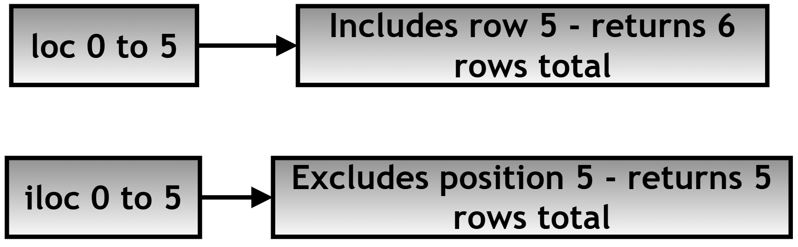

Chapter 12.40 — Research Project: Indexing and Selection in Pandas Using the Palmer Penguins Dataset¶
What this page covers¶
This page is a research project that puts everything from the last three chapter pages into practice on a real, genuine dataset — the Palmer Penguins dataset, a well-known, freely available collection of measurements from real penguins, commonly used to teach data analysis. The focus here is indexing and selection: the different ways Pandas lets you pull out exactly the rows and columns you actually want from a DataFrame — bracket notation, dot notation, .loc[], and .iloc[] — and, crucially, when each one is the right tool for the job.
Getting comfortable with these four approaches is genuinely foundational — almost every piece of real data analysis work involves selecting some subset of a larger table before doing anything else with it, and choosing the wrong indexing method for a given situation is one of the most common sources of confusing bugs for people newer to Pandas.
A few terms used throughout, explained simply:
- Label-based indexing — selecting data using the actual index/column names (e.g. the row labeled 0, or the column named 'species').
- Position-based indexing — selecting data using plain integer positions, counting from 0, regardless of what the labels actually are.
- Slicing — selecting a continuous range (e.g. "rows 10 through 20"), rather than one single item.
Research Question¶
How can different indexing and selection techniques in Pandas (
[],.,.loc[],.iloc[], and slicing) be used to efficiently extract, filter, and manipulate structured data, and what are their comparative advantages, limitations, and appropriate use cases when working with real-world datasets such as the Palmer Penguins dataset?
Task / Project Brief¶
You are required to:
1. Load and explore the Palmer Penguins dataset
2. Perform column selection using bracket [] and dot . notation
3. Perform row selection using .loc[] (label-based) and .iloc[] (position-based)
4. Perform combined slicing of rows and columns
5. Compare all methods in terms of syntax, flexibility, and limitations
6. Handle possible errors/exceptions
7. Document your findings with tables, code with comments, and flowcharts
A follow-up question worth exploring¶
The comparison table in Step 3 notes that dot notation "may conflict with pd.DataFrame methods." As a follow-up exercise: imagine a penguins dataset that had a column literally named count or mean (both of which are also real DataFrame methods, as covered on the earlier "Methods of Series" chapter page). Try to predict what df.count would actually give you in that situation — the real method, or the column? (Hint: it would be the method, not your column — this is exactly the kind of silent, confusing bug dot notation can cause, and why the earlier comparison table marks it as "Risky in some cases.") This is a strong practical reason to prefer bracket notation, df['count'], whenever there's any doubt.
Model Solution¶
Step 1: Import Libraries and Load the Dataset¶
import pandas as pd
import seaborn as sns
# Step 1: Load the Palmer Penguins dataset. Seaborn conveniently
# bundles several well-known example datasets, including this one,
# so no separate download or file is needed.
df = sns.load_dataset("penguins")
Step 2: Understanding the Data Structure¶
Before selecting anything, it's worth getting a feel for the shape and health of the data first.
2(A) — df.info(): a structural summary
# df.info() gives a concise summary: how many non-missing entries
# each column has, each column's data type, and total memory usage.
# This is the first thing worth checking on any new dataset, since it
# immediately reveals missing values and unexpected data types.
print("df.info():->", df.info())
<class 'pandas.core.frame.DataFrame'>
RangeIndex: 344 entries, 0 to 343
Data columns (total 7 columns):
# Column Non-Null Count Dtype
--- ------ -------------- -----
0 species 344 non-null object
1 island 344 non-null object
2 bill_length_mm 342 non-null float64
3 bill_depth_mm 342 non-null float64
4 flipper_length_mm 342 non-null float64
5 body_mass_g 342 non-null float64
6 sex 333 non-null object
dtypes: float64(4), object(3)
memory usage: 18.9+ KB
Notice the pattern immediately: several numeric columns show 342 non-null out of 344 total rows — meaning 2 rows are missing those measurements — and sex is missing even more (333 out of 344). This is exactly the kind of thing .info() is designed to surface at a glance. (One small detail worth knowing: .info() prints its summary directly and returns None — that's why the code above shows None printed right after the summary table.)
2(B) — df.describe(): a statistical summary
# df.describe() calculates count, mean, standard deviation, min, max,
# and the quartiles for every NUMERIC column, all in one call --
# see the earlier "Methods of Series" chapter page for what each of
# these statistics individually means.
print("df.describe():->\n", df.describe())
bill_length_mm bill_depth_mm flipper_length_mm body_mass_g
count 342.000000 342.000000 342.000000 342.000000
mean 43.921930 17.151754 200.915205 4201.754386
std 5.459584 1.974603 14.061714 801.954380
min 32.100000 13.100000 172.000000 2700.000000
25% 39.225000 15.600000 190.000000 3550.000000
50% 44.450000 17.300000 197.000000 4050.000000
75% 48.100000 18.700000 213.000000 4750.000000
max 59.600000 21.500000 231.000000 6300.000000
2(C) and 2(D) — column names and row labels
print("df.columns:->", df.columns)
# -> Index(['species', 'island', 'bill_length_mm', 'bill_depth_mm',
# 'flipper_length_mm', 'body_mass_g', 'sex'], dtype='object')
print("df.index:->", df.index)
# -> RangeIndex(start=0, stop=344, step=1)
# This tells us the rows are labeled with simple, sequential integers
# (0, 1, 2, ... 343) -- this matters later, since it means .loc[] and
# .iloc[] will happen to behave very similarly on THIS particular
# dataset (though not necessarily on datasets with different, custom
# row labels).
Step 3: Selecting Columns — Bracket [] vs. Dot . Notation¶
3(A) — Bracket [] notation
# Bracket notation selects one or more columns using square brackets.
# A single column returns a Series; a LIST of column names returns a
# smaller DataFrame containing just those columns.
# Step 1: Select a single column.
species = df['species']
print("species.head()->\n", species.head())
species.head()->
0 Adelie
1 Adelie
2 Adelie
3 Adelie
4 Adelie
Name: species, dtype: object
# Step 2: Select multiple columns at once, using a LIST inside the brackets.
subset = df[['species', 'bill_length_mm', 'body_mass_g']]
print("subset.head()->\n", subset.head())
subset.head()->
species bill_length_mm body_mass_g
0 Adelie 39.1 3750.0
1 Adelie 39.5 3800.0
2 Adelie 40.3 3250.0
3 Adelie NaN NaN
4 Adelie 36.7 3450.0
Notice row 3 shows NaN (missing data) for both numeric columns — a real, genuine gap in the dataset, exactly the kind of thing .info() in Step 2(A) warned us about in advance.
Advantages of bracket notation: - Works with any column name, even ones containing spaces or special characters - Flexible — handles both single and multiple column selection
3(B) — Dot . notation
# Dot notation accesses a column as if it were an ATTRIBUTE of the
# DataFrame -- but only works if the column name is a valid Python
# identifier: no spaces, no special characters, and it can't start
# with a number.
species_dot = df.species
print("species_dot.head()->\n", species_dot.head())
species_dot.head()->
0 Adelie
1 Adelie
2 Adelie
3 Adelie
4 Adelie
Name: species, dtype: object
Advantages of dot notation: more concise and easier to read for simple, valid column names.
Limitations of dot notation:
- The column name must be a valid Python identifier
- Cannot be used to select multiple columns at once
- Can silently conflict with genuine DataFrame methods that happen to share a column's name (see the follow-up question above)
Comparison table: [] vs. .
| Feature | [] Notation |
. Notation |
|---|---|---|
| Multiple columns | Yes | No |
| Special characters/spaces in names | Supported | Not supported |
| Safe usage | Recommended | Risky in some cases |
| Readability | Moderate | High (for simple names) |
Step 4: Selecting Rows — .loc[] vs. .iloc[]¶
4(A) — .loc[] (label-based indexing)
.loc[] selects rows and columns using their actual labels — df.loc[row_label, column_label].
# Step 1: Select a single row by its index label.
row_0 = df.loc[0]
print("row_0->\n", row_0)
row_0->
species Adelie
island Torgersen
bill_length_mm 39.1
bill_depth_mm 18.7
flipper_length_mm 181.0
body_mass_g 3750.0
sex Male
Name: 0, dtype: object
# Step 2: Select a RANGE of rows by label. IMPORTANT: with .loc[],
# slicing INCLUDES the end label -- 0:5 gives you rows 0, 1, 2, 3, 4, AND 5.
rows_0_5 = df.loc[0:5]
print("rows_0_5->\n", rows_0_5)
rows_0_5->
species island bill_length_mm bill_depth_mm flipper_length_mm body_mass_g sex
0 Adelie Torgersen 39.1 18.7 181.0 3750.0 Male
1 Adelie Torgersen 39.5 17.4 186.0 3800.0 Female
2 Adelie Torgersen 40.3 18.0 195.0 3250.0 Female
3 Adelie Torgersen NaN NaN NaN NaN NaN
4 Adelie Torgersen 36.7 19.3 193.0 3450.0 Female
5 Adelie Torgersen 39.3 20.6 190.0 3650.0 Male
# Step 3: Combine row AND column selection in one call.
subset_loc = df.loc[0:5, ['species', 'body_mass_g']]
print("subset_loc->\n", subset_loc)
subset_loc->
species body_mass_g
0 Adelie 3750.0
1 Adelie 3800.0
2 Adelie 3250.0
3 Adelie NaN
4 Adelie 3450.0
5 Adelie 3650.0
4(B) — .iloc[] (position-based indexing)
.iloc[] selects rows and columns using plain integer positions, starting from 0 — completely independent of whatever the actual labels happen to be.
# Step 1: Select the first row, by POSITION (not by label).
row_0_iloc = df.iloc[0]
print("row_0_iloc->\n", row_0_iloc)
row_0_iloc->
species Adelie
island Torgersen
bill_length_mm 39.1
bill_depth_mm 18.7
flipper_length_mm 181.0
body_mass_g 3750.0
sex Male
Name: 0, dtype: object
# Step 2: Select a range of rows by POSITION. IMPORTANT: with .iloc[],
# slicing EXCLUDES the end position -- 0:5 gives you positions 0
# through 4 ONLY (five rows total), not position 5.
rows_iloc = df.iloc[0:5]
print("rows_iloc->\n", rows_iloc)
rows_iloc->
species island bill_length_mm bill_depth_mm flipper_length_mm body_mass_g sex
0 Adelie Torgersen 39.1 18.7 181.0 3750.0 Male
1 Adelie Torgersen 39.5 17.4 186.0 3800.0 Female
2 Adelie Torgersen 40.3 18.0 195.0 3250.0 Female
3 Adelie Torgersen NaN NaN NaN NaN NaN
4 Adelie Torgersen 36.7 19.3 193.0 3450.0 Female
# Step 3: Combine row AND column selection, both by POSITION.
subset_iloc = df.iloc[0:5, 0:3]
print("subset_iloc->\n", subset_iloc)
subset_iloc->
species island bill_length_mm
0 Adelie Torgersen 39.1
1 Adelie Torgersen 39.5
2 Adelie Torgersen 40.3
3 Adelie Torgersen NaN
4 Adelie Torgersen 36.7
The single most important thing to notice across Steps 4(A) and 4(B): df.loc[0:5] returned 6 rows (0 through 5, inclusive), while df.iloc[0:5] returned only 5 rows (0 through 4). This is the core practical difference between the two — and a very common source of off-by-one confusion for anyone new to Pandas.

Comparison table: .loc[] vs. .iloc[]
| Feature | .loc[] |
.iloc[] |
|---|---|---|
| Basis | Labels (index names) | Integer positions |
| End of a slice | Included | Excluded |
| Flexibility | High | High |
| Boolean indexing (filtering with a condition) | Supported directly | Not directly supported |
Step 5: Slicing Rows and Columns Simultaneously¶
5(A) — Using .loc[] for slicing by labels
slice_loc = df.loc[10:20, ['species', 'island', 'body_mass_g']]
print("slice_loc->\n", slice_loc)
slice_loc->
species island body_mass_g
10 Adelie Torgersen 3750.0
11 Adelie Torgersen 3800.0
12 Adelie Torgersen 3250.0
13 Adelie Torgersen NaN
14 Adelie Torgersen 3450.0
15 Adelie Torgersen 3650.0
16 Adelie Torgersen 3800.0
17 Adelie Torgersen 3700.0
18 Adelie Torgersen 3600.0
19 Adelie Torgersen 3500.0
20 Adelie Torgersen 3400.0
.loc[] slicing is inclusive of the end label.
5(B) — Using .iloc[] for slicing by integer position
slice_iloc = df.iloc[10:20, 0:3] # Rows at positions 10-19, columns at positions 0-2
print("slice_iloc->\n", slice_iloc)
slice_iloc->
species island bill_length_mm
10 Adelie Torgersen 37.8
11 Adelie Torgersen 37.8
12 Adelie Torgersen 41.1
13 Adelie Torgersen 38.6
14 Adelie Torgersen 34.6
15 Adelie Torgersen 36.6
16 Adelie Torgersen 38.7
17 Adelie Torgersen 42.5
18 Adelie Torgersen 34.4
19 Adelie Torgersen 46.0
.iloc[] column slicing follows the same "end excluded" rule as row slicing.
Choosing the right approach¶
Table: When to use what
| Scenario | Recommended method |
|---|---|
| Selecting one column | df['col'] |
| Selecting multiple columns | df[['col1', 'col2']] |
| Filtering by row labels | .loc[] |
| Filtering by integer position | .iloc[] |
| Complex, combined row-and-column slicing | .loc[] / .iloc[] |
| Safe, production-level code | [] for columns, .loc[] for label-based row access |
Flowchart¶
The following diagram illustrates the overall indexing decision process:

Quick recap¶
df.info()anddf.describe()are the right first calls on any new dataset — they immediately surface missing values, data types, and basic statistics, before you select or filter anything.- Bracket notation (
df['col'],df[['col1', 'col2']]) is the safest, most flexible way to select columns — it works with any column name and supports selecting multiple columns at once; dot notation is more concise but comes with real limitations and risks, as the follow-up question above demonstrates. .loc[]uses labels and includes the end of a slice;.iloc[]uses integer positions and excludes the end of a slice — this single distinction (demonstrated directly in Step 4 withdf.loc[0:5]returning 6 rows vs.df.iloc[0:5]returning 5) is the most important thing to internalize from this whole page.- Both
.loc[]and.iloc[]support combining row and column selection in one call —df.loc[rows, columns]anddf.iloc[rows, columns]— making them the right tool whenever you need more than a simple column selection. - On a dataset like this one, where the row labels happen to just be sequential integers (
0, 1, 2, ...),.loc[]and.iloc[]can look deceptively similar in places — but they follow genuinely different rules (label vs. position, inclusive vs. exclusive), and that difference becomes very visible the moment a dataset has custom, non-sequential row labels.